Evolving a Brand into a Future-Ready Fintech

As CU Direct expanded beyond automotive lending into mortgages and other financial services, it faced the challenge of redefining its image as a future-forward fintech SaaS. The solution centered on a bold evolution of CU Direct’s visual framework, evoking technology, security, and leadership in the financial ecosystem of tomorrow.
Brand system

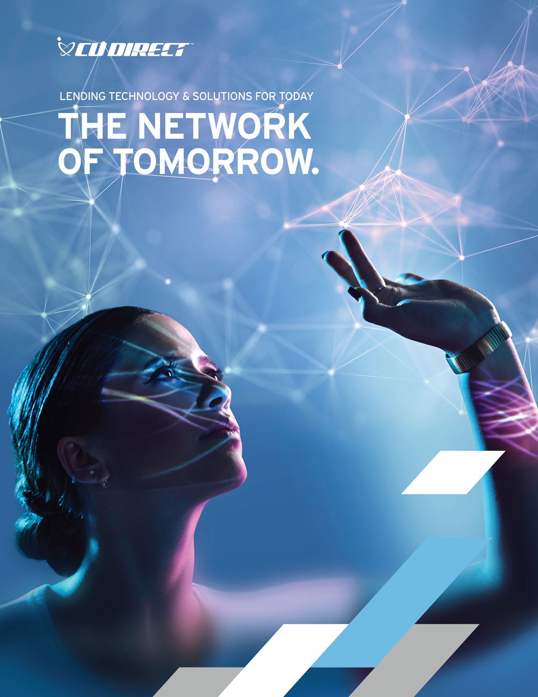
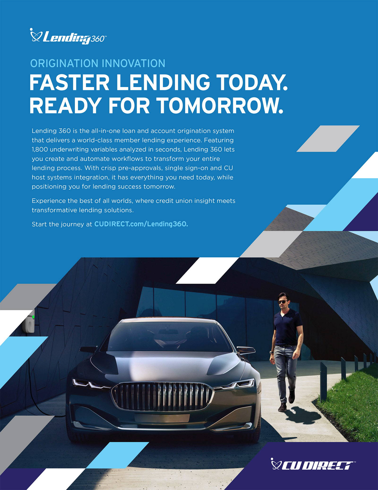
The digital footprint grew in importance, with the aesthetic applied across online campaigns, corporate communications, and annual report work.
Annual report
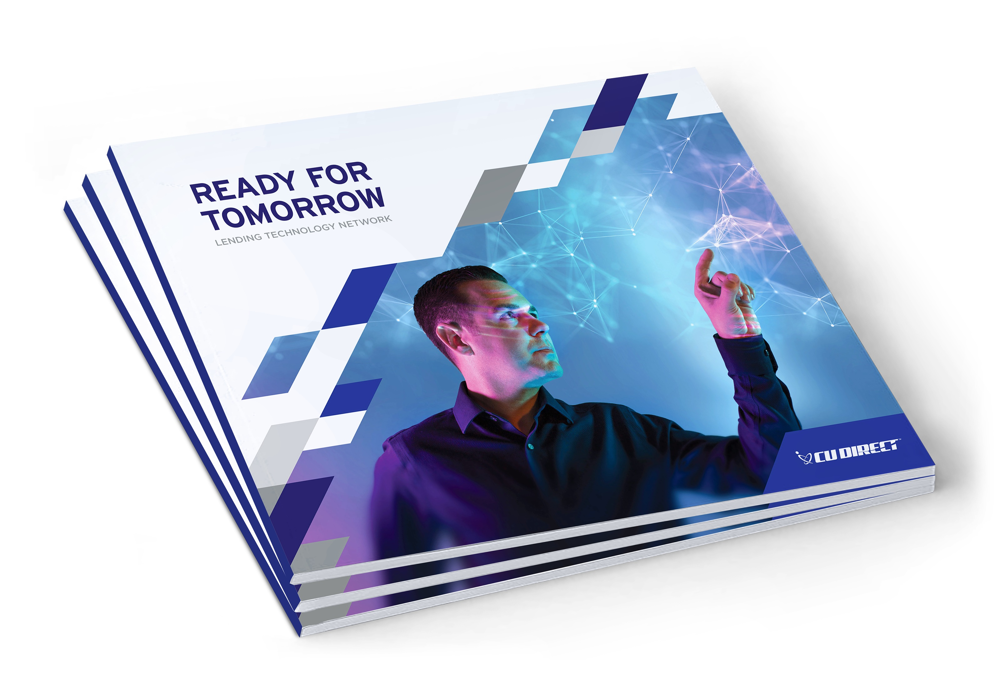

Web design


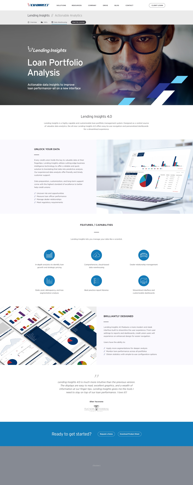
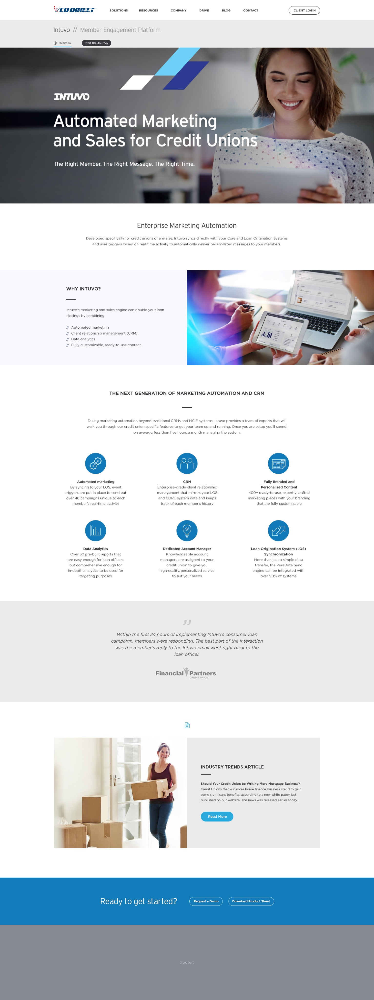
Industry conventions remained essential touchpoints. CU Direct’s presence at NADA, GAC, and its own annual conference showcased the evolved identity at scale, translating the system from digital layouts into spatial graphics, signage, and event storytelling.
Environmental design
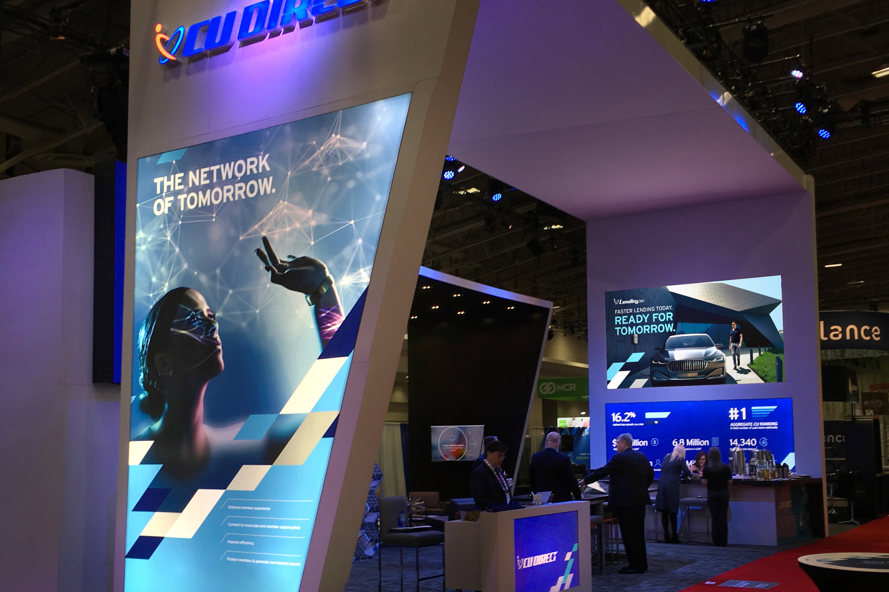
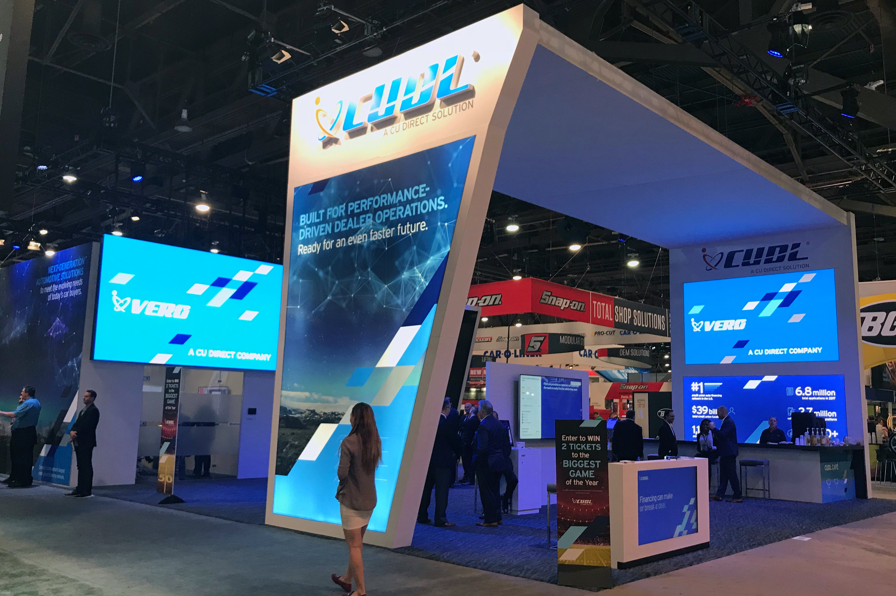
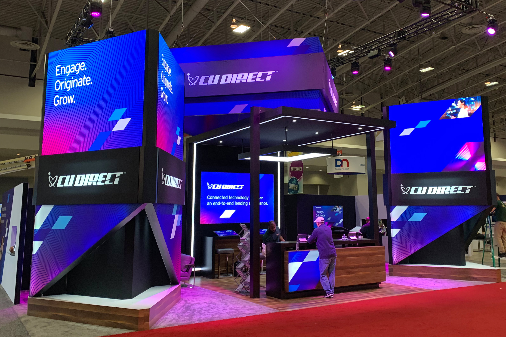
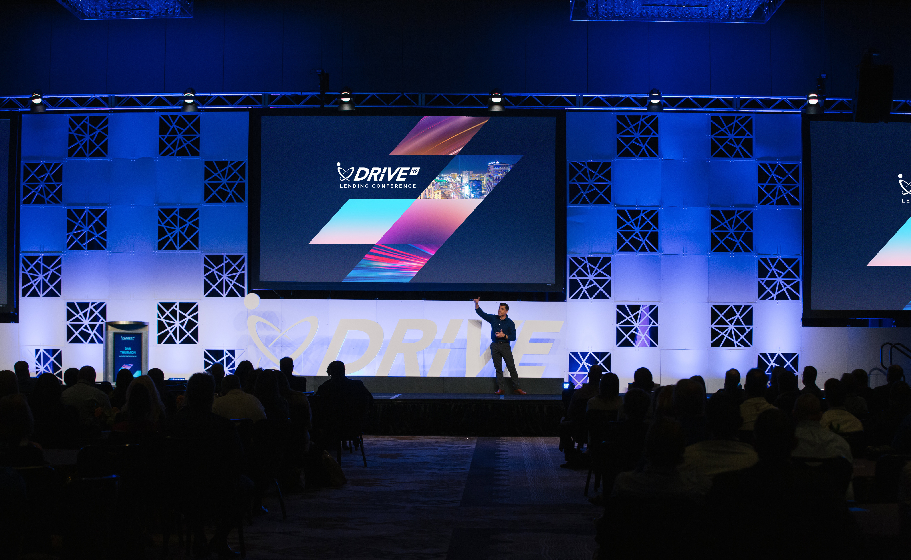
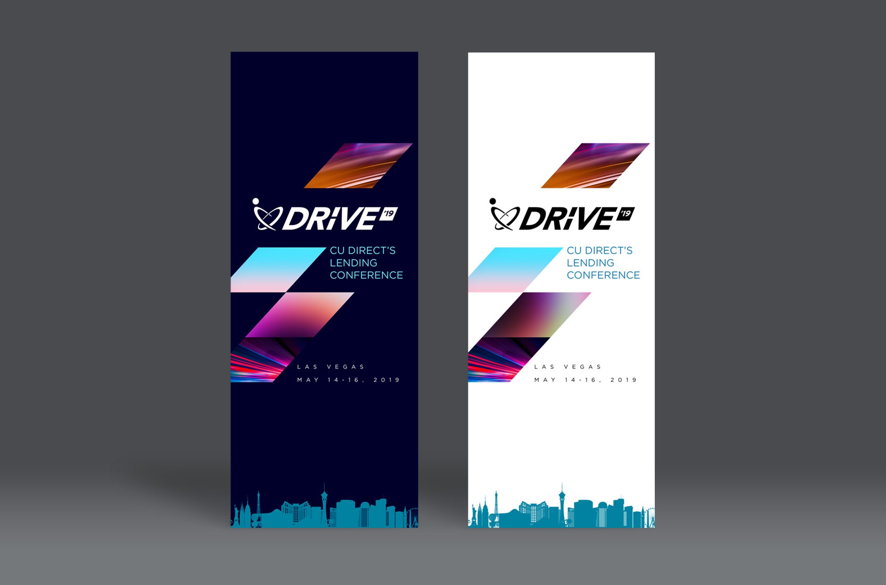
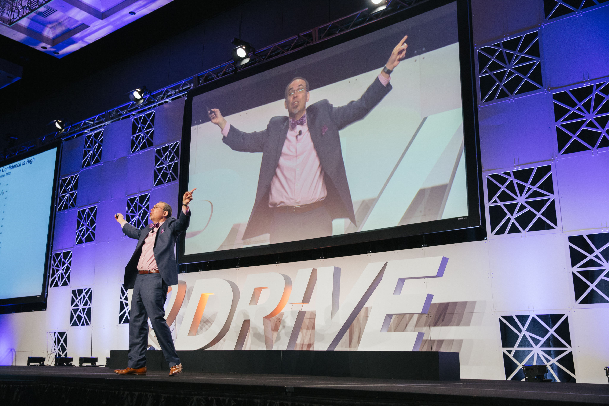
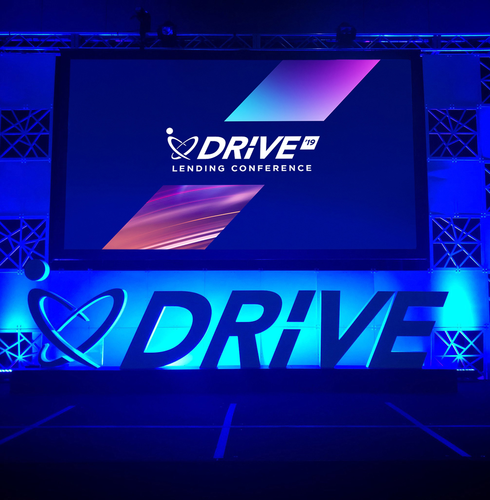
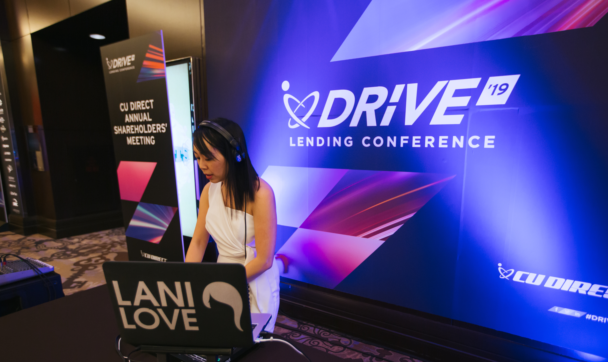
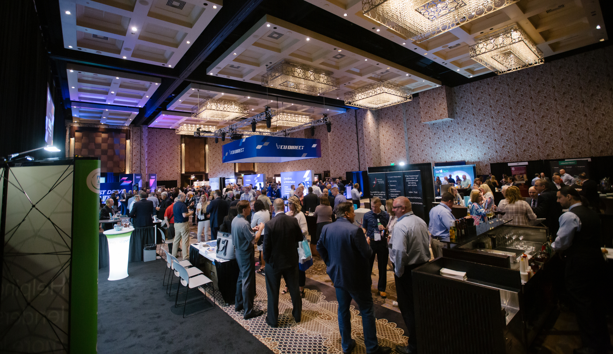